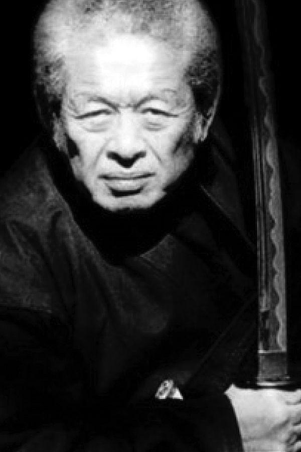

Shinden Fudo Ryû

"Tradition of the Immovable God School"
Dr. Hatsumi is the 17th Soke

Overview:
The Dakentaijutsu learned in this ryû has throws, strikes, locks, and
kicks done in a fairly straightforward manner. It uses the body as a
striking weapon and often seems “hard” in the application. The Shinden
Fudo Ryû was known for its use of nature as an ally and would use
nature to assist in their training. The techniques of the ryû are
often very casual looking starting from a relatively natural standing
position. This school is also known for teaching very natural and
effective ukemi (receiving skills).
This school is also famous for its
use of oversized weapons when going into battles, such as ken (sword),
Yari (spear), Ono (war axe), O-tsuchi (war hammers), and Naginata
(halberd). The ryû was founded in the 1100s by Izumo Kanja Yoshiteru
who had previously studied Chinese Kempo Boxing. Today some of this is
still noticeable within the techniques. This was the first school
by Toshitsugu Takamatsu from his uncle Toda Shinryuken Masamitsu.
Rules of the ryu written into the Densho:
- Know the wisdom of being patient during times of inactivity.
- Choose the course of Justice as the path of your life.
- Do not allow your heart to be controlled by the demands of greed, comfort, or pain.
- Sorrow, pain, and resentment should be regarded as natural qualities to be found in life. Therefore, work to cultivate an immovable spirit.
- Hold in your heart the importance of family loyalty, and aspire greatly for the ways of the pen and the sword with balanced determination.
Headmasters of Shinden Fudo Ryû:
- Ikai
- Hogenbo, Tesshin
- Sakabe, Tendo
- Izumo, Kanja Yoshiteru (Kumano) -Yeikyu era (1113)
- Minamoto, Hachiman Tamenari -Genyei era (1118)
- Minamoto, Hachiro Tameyoshi - Hogen era (1156)
- Mizuhara, Kuro Yoshinari -Genkyu era (1204)
- Mugaibo, Shinnen -Tempuku era (1233)
- Ohkuni, Zenhachiro Yoshinobu -Bunyie era (1264)
- Hata, Saburo Sasukeyasu
- Kotani, Yuhachiro Nobuchika -Geboko era (1321 or 1331)
- Kaneko, Jinsuke Yoshikiyo -Shohei era (1346)
- Tajima, Genkoro Nariyoshi -Genchu era (1384)
- Kammon, Kokanja Yoshikane -Shocho era (1428)
- Kimura, Hozen -Kwancho era (1460)
- Ibuki, Yoshihaha -Bummei era (1469)
- Otsuka, Hakushi Nyudo Tadamori -Yeisho era (1504)
- Otsuka, Daikuro Tadahide -Taiyei era (1522)
- Abe, Muga -Tensho era (1573)
- Koga, Taro Kyokokaku -Tensho era (1573)
- Katayama, Hokinokami Mori Hisayasu -Bunroku era (1592)
- Shindo, Unsai - Kwanyei era (1624-1644)
- Odagiri, Tohyoe Yoshihiso - Kwanyei era (1624-1644)
- Iida, Jubee Tameyoshi -Meiwa era (1764)
- Mori, Genroku Masahide -Bunkwa era (1804)
- Toyota, Jubei Mitsuyoshi -Keiyo era (1865)
- Toda, Shinryuken Masamitsu (Kobe) -Meiji era (1824 - 1909)
- Takamatsu, Toshitsugu (Nara) -Taisho era (1909) (b.1888 - d.1972)
- Hatsumi, Masaaki (Noda) - Showa era (1968) b.1931 - )